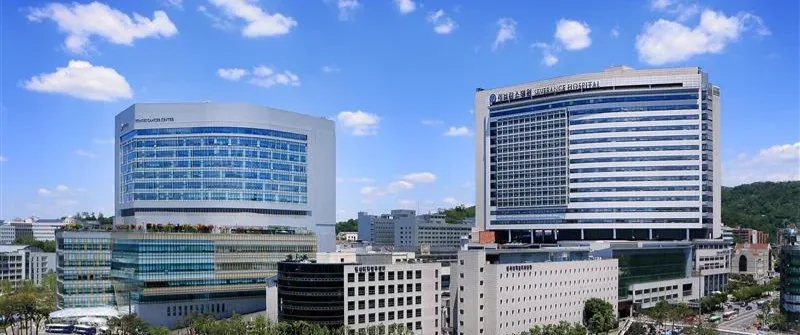

Базовая программа
- онкомаркеры (CEA, CA19‑9, AFP, PSA, CA125)
- ЭКГ · спирометрия
- УЗИ брюшной полости
- гастроскопия

Olivezone Medical · Сеул
Более 15 лет помогаем организовать обследование, лечение и пластические операции в Корее. Подбираем клинику, помогаем с документами и сопровождаем на приёмах.
Имеются противопоказания. Необходима консультация специалиста.
01 · Пластическая хирургия
Для получения консультации по пластике необходимо прислать фотографии и указать желаемые операции.
Клиники пластической хирургииСтоимость пластических операций
02 · Косметология и дерматология
03 · Чекап
Исследования: лабораторные, гистологические, рентгенологические, аппаратные. Программу подбирают по жалобам и хроническим заболеваниям.
04 · Онкология и трансплантация
Документы
Подготовьте выписки, заключения врачей и результаты проведённых исследований. Если есть снимки, сообщите об этом — мы подскажем, как их отправить.
Отметки остаются только на вашем экране. Документы на сайт не загружаются — список уточнит координатор в мессенджере.
Как всё устроено
Мы организуем и сопровождаем. Диагноз и лечение — у врачей клиники.
Клиники
Медицинское сопровождение
Директор компании медицинского туризма Olivezone Medical, врач‑офтальмолог.
Вопросы
Условия въезда зависят от гражданства, цели поездки и срока пребывания. До покупки билетов уточните действующие требования в консульстве Республики Корея и необходимость K‑ETA. Если для лечения нужна виза, поможем запросить приглашение у клиники.
Медицинские услуги оплачиваются в корейских вонах. Способы оплаты, сроки и необходимость предоплаты уточняются в выбранной клинике до поездки. Мы поможем заранее разобраться в этих условиях и спланировать расходы.
Да, поможем разобраться с анкетой и подготовить сведения для подачи, если K‑ETA требуется для вашей поездки. Заявку следует подавать заранее: рассмотрение обычно занимает до 72 часов, но может длиться дольше. Государственный сбор оплачивается отдельно. Одобренная K‑ETA не гарантирует въезд — окончательное решение принимает пограничная служба. Актуальные требования: www.k-eta.go.kr.
Да, организуем встречу и трансфер до места проживания по предварительному согласованию. Пришлите данные рейса и сообщите, если вам нужна дополнительная помощь при передвижении.
Мы заранее согласуем сопровождение на русском языке и уточним, кто будет помогать вам на приёмах и обследованиях: координатор клиники или сотрудник нашей команды.
Мы не берём плату с пациента за подбор клиники и организацию обращения. Лечение, проживание и другие расходы на поездку оплачиваются отдельно. До поездки уточним, какие услуги включены в согласованные условия, а какие требуют отдельной оплаты.
В зависимости от расположения гостиницы можно воспользоваться метро, такси или заранее согласованным трансфером. Поможем разобраться с маршрутом и при необходимости вызвать такси.
Консультация
Отвечает живой человек, не бот. Подберём клинику и программу и будем рядом на каждом шаге.
Горячая линия работает круглосуточно
1Что вас интересует
2Откуда планируете поездку
3Где вам удобнее общаться
Имеются противопоказания. Необходима консультация специалиста.